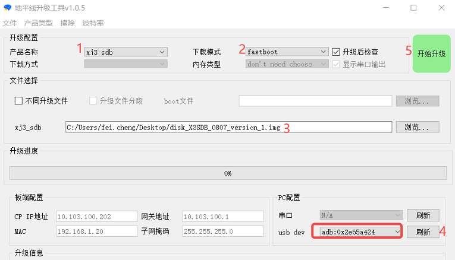
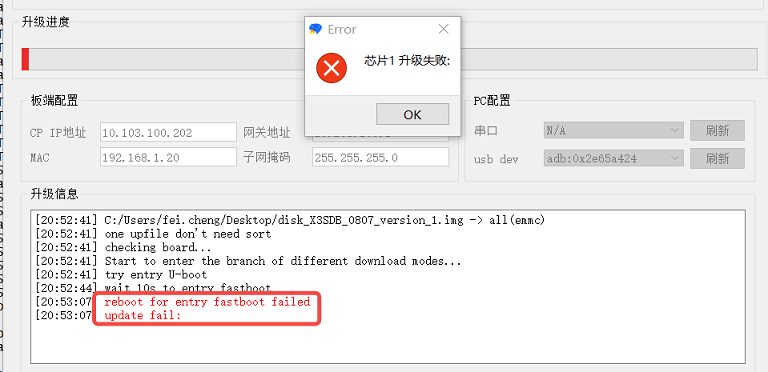
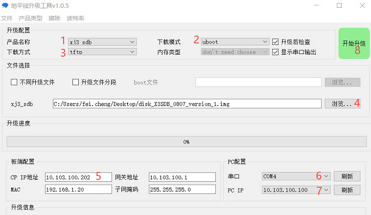
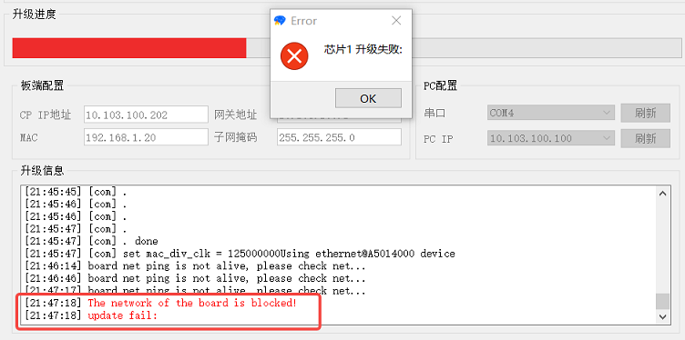
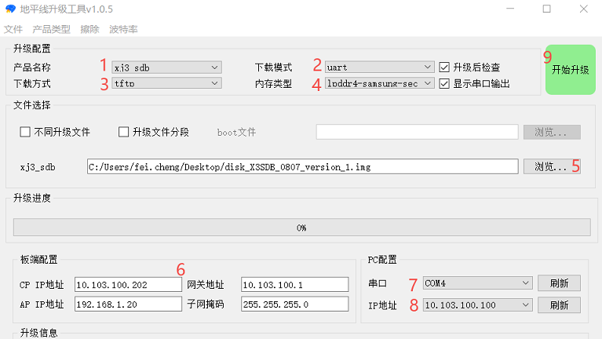
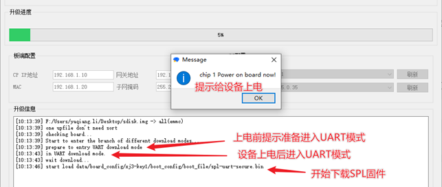
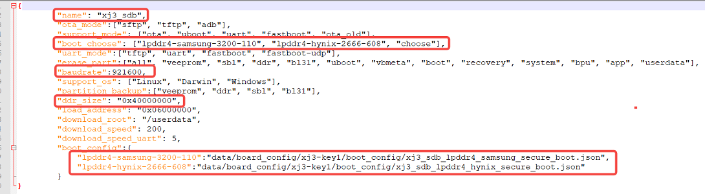
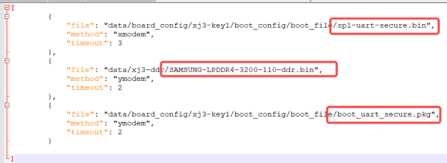
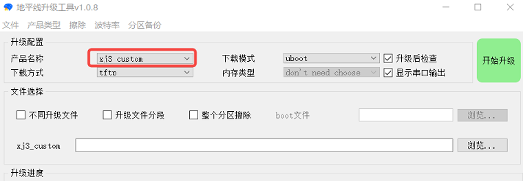

2.3. 镜像升级方法
由于X3芯片方案交付包中的Sample程序跟系统SDK可能存在版本依赖，因此在使用Sample程序前，用户需要使用交付包中配套的开发板镜像对开发板进行升级，推荐直接使用交付包预先编译的开发板镜像。此外用户也可基于源码自行编译，但需保证编译命令跟X3SDB开发板对应。对于开发板的镜像升级，地平线提供了PC端一键式工具hbupdate（推荐使用v1.3及以上版本），下表为几种常用的升级方法。
| 升级模式 | 应用场景 | 依赖接口 | 升级描述 |
|---|---|---|---|
| USB升级 | 正常升级 | USB | 适用于开发板方便USB口连接的场景，开发板通过Micro USB线跟PC连接完成升级 |
| 网口升级 | 正常升级 | 串口、网口 | 适用于开发板方便串口、网口连接的场景，开发板通过串口线、网线跟PC连接完成升级 |
| 串口升级 | 变砖修复 | 串口、网口 | 适用于开发板变砖修复场景，开发板通过串口线、网线跟PC连接完成升级 |
注意事项： 如果使用X3 SDB开发板，需注意核心板使用的DDR型号，目前SDB开发板有使用如下DDR
K4F6E3S4HM-MGCJ 2GB三星LPDDR4
K4FBE3D4HM-MGCJ 4GB三星LPDDR4
MT53E1G32D2FW-046 WT:A 4GB镁光LPDDR4
发布包X3M_SDK/board_support_package/firmwares中默认编译好的镜像为三星2GB LPDDR4镜像，如果使用的核心板是其他型号DDR，请参考环境搭建及编译说明章节编译对应DDR的系统镜像进行烧录。
2.3.1. USB升级
USB升级方法是指开发板可以正常启动进入系统的状态下，用户可以通过开发板Micro USB口完成升级的方法。升级过程中，hbupdate工具通过adb下发重启指令让开发板重启并进入fastboot模式，然后升级工具使用fastboot命令完成镜像文件的传输和烧写。
需要注意，升级前用户需要保证PC正确安装了X3交付包Software_tools目录中的fastboot驱动，驱动安装方法请参考2.2.3章节。
开始升级前，升级工具需按图中红色数字顺序进行配置，配置在工具关闭后失效，用户如需保存配置可点击文件菜单栏保存配置。工具配置步骤如下：

产品名称选择xj3_sdb
下载模式选择fastboot
点击浏览选择升级包，不能包含中文路径、空格
点击刷新探测adb端口，如红框内未显示adb设备，请参考2.2.3.1章节排查
点击开始升级，等待进度条完成到100%
如工具升级报错，失败信息提示reboot for entry fastboot failed，说明工具没有检测到fastboot设备，请参考2.2.3.2章节排查。

2.3.2. 网口升级
网口升级是指开发板可以正常启动进入系统的状态下，用户可通过开发板串口+网口完成升级的方法。升级过程中，hbupdate工具通过串口下发重启指令让开发板重启并进入uboot模式，然后升级工具使用tftp、ota等命令完成镜像文件的传输和烧写。
需要注意，网口升级需要开发板和PC网络能够相互ping通，且PC环境中没有开启防火墙和tftp工具，网络配置方法请参考2.2.2章节。
网口升级时，镜像大小不能大于开发板的内存大小。如果镜像超过了内存大小则需要对镜像镜像分段，software_tools/update_tools/separate_disk.sh 脚本可以帮助拆分镜像，并且在升级时勾选 升级文件分段。
开始升级前，升级工具需按图中红色数字顺序进行配置，配置在工具关闭后失效，用户如需保存配置可点击文件菜单栏保存配置。工具配置步骤如下：

产品名称选择xj3_sdb
下载模式选择uboot
下载方式选择tftp
点击浏览选择升级包，不能包含中文路径、空格
将开发板网络配置填入CP IP地址和网关地址
选择开发板串口在PC上的COM
选择PC机网络IP
点击开始升级，等待进度条完成到100%
如工具升级报错，失败信息提示The network of the board is blocked!，说明工具跟开发板网络通信异常，请检查工具配置第5步是否存在问题。

2.3.3. 串口升级
串口升级是指开发板空片或者变砖时，用户需要通过开发板串口+网口完成修复升级的方法。升级过程中，hbupdate工具在开发板上电前，通过串口循环发送握手指令，当开发板上电并检测到该指令后，会强制切换到UART启动模式，然后工具通过串口向开发板下发预置在工具中的bootloader镜像文件(路径data\board_config\xj3-key1\boot_config\boot_file），完成bootloader传输并跳转进Uboot，最后升级工具使用tftp、ota等命令完成镜像文件的传输和烧写。
需要注意，网口升级需要开发板和PC网络能够相互ping通，且PC环境中没有开启防火墙和tftp工具，网络配置方法请参考2.2.2章节。
开始升级前，升级工具需按图中红色数字顺序进行配置，配置在工具关闭后失效，用户如需保存配置可点击文件菜单栏保存配置。工具配置步骤如下：

产品名称选择xj3_sdb
下载模式选择uart
下载方式选择tftp
内存类型选择lpddr4-samsung-sec
点击浏览选择升级包，不能包含中文路径、空格
将开发板网络配置填入CP IP地址和网关地址
选择开发板串口在PC上的COM
选择PC机网络IP
点击开始升级，并按下图方式给设备上电

2.3.4. 自定义升级
地平线hbupdate升级工具默认只支持地平线开发板的参数配置(DDR类型、网络等)，但工具提供了定制化配置能力，以满足用户对定制化硬件的版本升级需求。修改方法如下：
在工具目录中新增board配置文件，文件路径hbupdate\data\board_config\xj3-key1，例如xj3_custom.json
根据硬件规格，修改新建的xj3_custom.json，主要涉及下图红框内容，name字段不要跟开发板重名，否则工具无法做出区分
修改xj3_custom.json中指定的ddr json配置文件,用于指定工具UART升级中需要使用的bootloader镜像，文件路径hbupdate\data\board_config\xj3-key1\boot_config,例如xj3_sdb_lpddr4_samsung_secure_boot.json
完成上述修改后重新打开hbupdate工具，可在产品名称中找到自己定制的产品类型，如下图：
